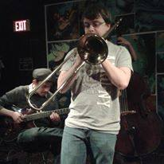

Mitchell Smith

My Summary
I am a Twenty-Seven year old musician who performs in differnt bands across the GTA. However,
I am currently interested in doing coding and have been studying Python, JavaScript, and Web Development
since late 2022.
Education
- Bachelor of Music, Humber College, 2013-2017
Work Experience
Band Work
Chinguacousy Swing Orchestra
2012 - 2018
- Second Trombone Player, 2012 to 2016
- Lead Trombone Player, 2016 to 2018
- Leader: Al Bourke
Chinguacousy Concert Band
2014 - 2016
- Second Trombone Player, 2014 to 2016
- Leader: Eric Kyle
Sheraton Cadwell Orchestra
2015 - 2016
- Bass Trombone Player, 2015
- Lead Trombone Player, 2016
- Leader: Andrew Chow
Missiagua Big Band Jazz Ensemble
2016 - present
- Lead Trombone Player, 2019 to present
- Bass Trombone Player, 2016 to 2018
- Leader: Rob Boniface
Megacity Swing Band
2018 - present
- Second Chair Trombone Player, 2023 to present
- Bass Trombone Player, 2018 to 2022
- Leader: Gary Martin
Brampton Jazz Mechanics
2021 - present
- Third Chair Trombone Player, 2021 to present
- Leader: David Harmsworth
Other Music Work
TA for Humber Music Communnity School
2014 - 2017
- Worked in three different level classes that focus on early childhood musical development.
- Employer: Evile
Humber Muisc Stage Crew
2016 - 2017
- Worked as part of a stage crew to help set up and tear down music performances at the school.
- Employer: Andy Pryde
Volunteer Work
Chinguacousy Stage Band Crew
2013 - 2018
- Worked as part of a stage crew to help set up and tear down music performances at the local band shell.
- Leader: Al Bourke
MusicFest Canada
2015 - present
- Audio Engineer: 2015 - 2017
- Worked as part of an audio team that monitored live music audio and recorded performances.
- Assistant Stage Manager: 2018
- Worked as an assistant stage manager in 2018.
Role was to follow direction from the main stage manager and manage team in getting performances organized.
- Audio Manager: 2019 - present
- Worked as an audio manager. Main job was to audit recordings and see if the gear was working properly.
- Leader: Al Bourke
Skills
- Tenor and Bass Trombone playing Skills: 5/5
- Improvising Skills: 4/5
- Sight Reading: 4/5
- Audio Editing: 3/5
- Live Audio Editing: 3/5
- Composing: 3/5
Awards
- Eddie Sossin Award
- Description: Awarded to the student who has showed the most improvement.
- Award received: 2017
Other
My Hobbies
My Contacts